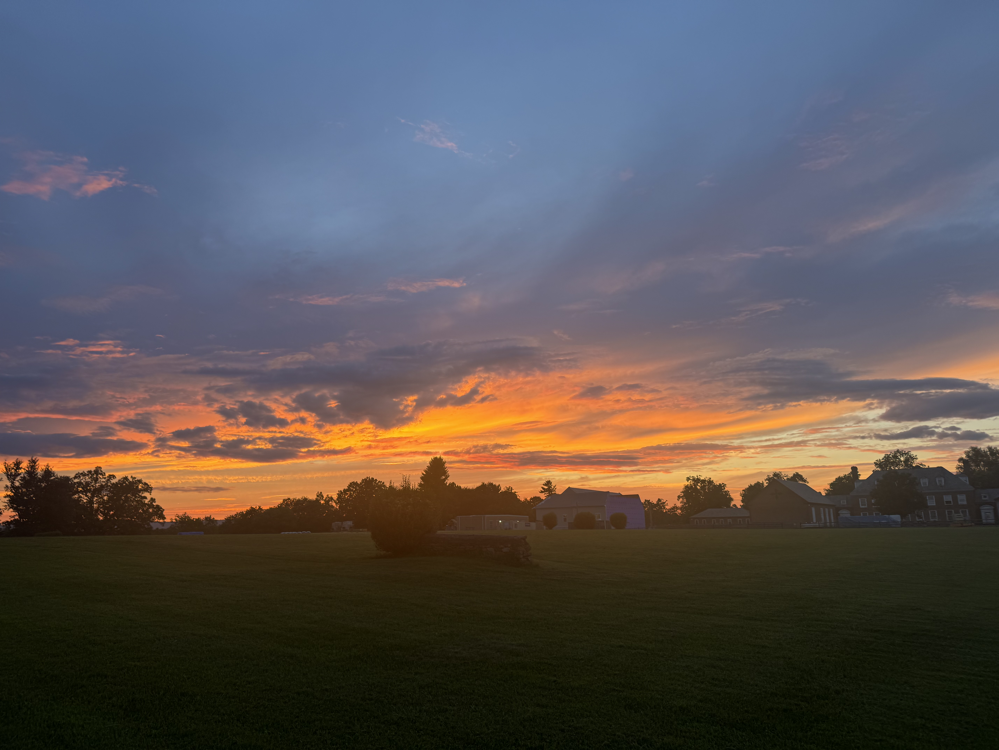
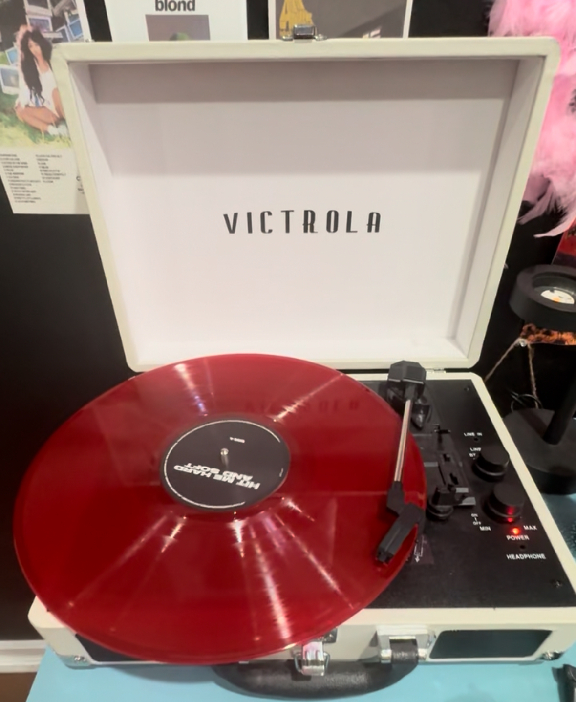

My Favorites

Sunset Walks
Evening skies + music = perfect peace.
I took this during one of my solo walks. The pink sky made everything feel calm again.
Cozy Mornings
Warm tea, quiet playlists, soft light.
I love mornings where I can just exist — no rush, no noise, just warmth.

My Music Mood
Soundtracks that feel like me.
A mix of comfort songs and new finds that make me feel like myself again.